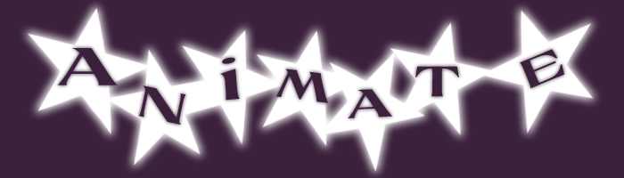

Here is a screenshot from my motion project. Here I have made a small loop that can play over some of the music I made with my friend. We call ourselves limewire and this has became our new image. I was inspired by my childhood on Newgrounds and also downloading music on Limewire. If you can somehow still play .swf files, go ahead and click the image to view the animation with sound.